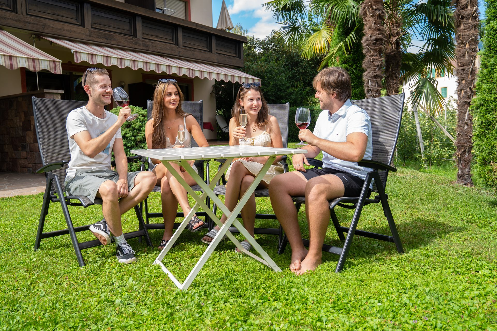

Regionale Spezialitäten
Entdecken Sie die alpine Hochküche und bodenständige Klassiker direkt vor unserer Haustür. Von herzhaftem Speck bis hin zu feinsten Weinkreationen – lassen Sie sich von der Vielfalt Lana’s verzaubern.

Unsere Empfehlungen
Nur etwa 3 Minuten zu Fuß von den Feyerlin Apartments entfernt. Authentischer, uriger Südtiroler Keller – perfekt für einen gemütlichen Abend.
Neapolitanische Pizza wie in Italien – mit weichem, luftigem Rand und leckerem Boden. Aber auch leckere italienische Pasta und Fischgerichte.
Feine Torten und Kuchen in der Konditorei Sader. Ideal für eine süße Pause nach einem Bummel durch Lana. Das Eis ist auch unter meinen Favoriten.
Eine Übersicht unserer liebsten Adressen in und um Lana – nach Kategorie geordnet, zum direkten Nachschauen.